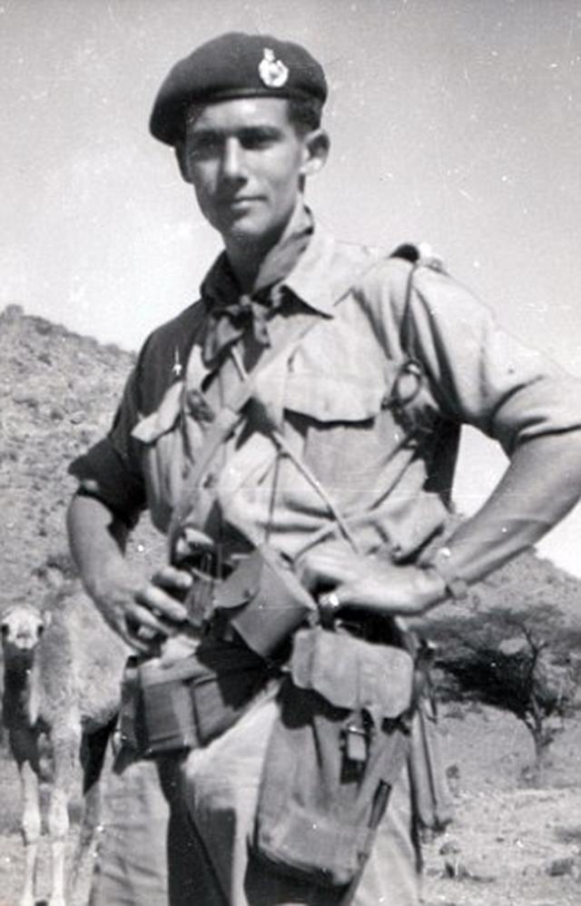
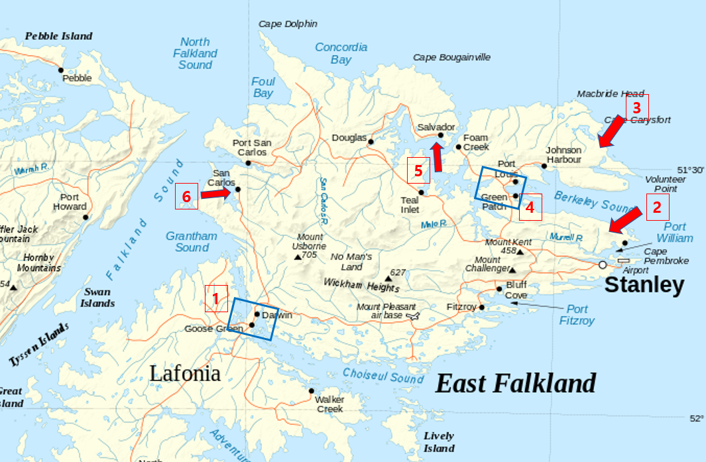
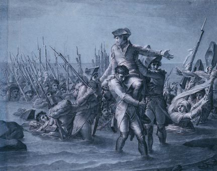
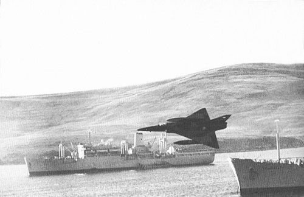

포클랜드 전쟁 잡담 - 어? 왜 거기에?
게시: 2022-02-17T06:30:45+09:00
<어디에 상륙하지?> 영국 포클랜드 원정군의 주축은 로열네이비였지만 따지고 보면 해군의 임무는 지상군을 안전하게 상륙시켜 제 할 일을 하게 해주는 것. 그리고 섬을 공격할 때 가장 어려운 부분이 바로 지상군의 상륙. 부동산 투자와 상륙작전은 공통점이 많은데 바로 입지와 타이밍이 절대적이라는 점. 상륙 및 교두보 확보의 임무를 지게 된 것은 로열마린, 그러니까 영국 해병대의 제3 코만도 여단(3 Commando Brigade)의 지휘관 Julian Thompson. 그런데 외지인이 지방 부동산에 투자하는 것은 매우 어려운 일. 그래서 현지 사정에 밝고 믿을 만한 공인중개사 확보가 필수. 톰슨 중장에게는 천만다행으로, 그에게는 Ewen Southby-Tailyour 소령(아래 사진)이 있었음. 사우스비 소령은 바로 4년 전에 포클랜드 수비대로 주둔할 때 섬 전체 해변을 보트로 일주하면서 모든 해안을 탐사했던 사람.

지도 1번) 먼저 웨스트 섬 전체와 이스트 섬 남반부 전체는 후보에서 제외. 웨스트 섬에 상륙해봐야 점령 목표물인 Port Stanley를 점령하려면 다시 바다를 건너 이스트 섬으로 가야 하니까 웨스트 섬은 제외. 그리고 이스트 섬의 남반부 (Lafonia라고 불림)는 북반부와 Goose Green 지협 (지도의 1번 지역, 파란색 사각형)으로 사실상 분리되어 있으므로 제외. 이 지협은 폭이 불과 2.2km에 불과하므로 남반부에 상륙해봐야 아르헨티나군이 이 지협만 꽉 막으면 돌파가 어려웠음. 아예 이 지협 인근에 상륙하는 것도 검토했으나 사우스비 소령이 반대. 이유는 이쪽 해안의 바닷물 속에는 kelp라는 미역류의 해초가 하도 빽빽하게 자라서 상륙정의 항해가 어려울 지경이었기 때문. 그런 건 해도에도 나오지 않는 정보였음. 지도 2번) 속전속결로 적에게 기습을 하려면 최대한 포트 스탠리에 가까운 곳에 상륙하는 것이 좋긴 함. 그래서 Berkeley Sound의 남쪽 해안인 Uranie 만에 상륙하는 것도 검토했으나 곧 배제. 아르헨티나군도 여기를 가장 그럴싸한 상륙지점으로 여기고 있었으므로, 여기에 상륙했다가는 아르헨티나군의 155mm 중포에 얻어맞으며 상륙을 해야 할 판국이고, 특히 여기에는 지상발사 엑조세 미사일이 배치되어 있었으므로 해변에 닿기도 전에 함선의 피해가 극심할 것으로 예상. 지도 3번) 아르헨티나 지상군의 직접적인 타격 범위를 벗어난 지역인데 상대적으로 가까웠던 맨 북쪽 해안에 상륙하는 것도 검토. 그러나 여기도 배제. 이유는 지도 4번의 Green Patch 지협 때문. 아르헨티나군이 거기만 틀어막으면 지도 1번의 구스 그린 지협과 똑같은 상황이 되기 때문. 결국 최종 후보지는 지도 5번과 지도 6번 두 지역. 5번 Salvador와 6번 San Carlos는 둘 다 만 안 쪽에 위치한 해변이라서 비교적 파도가 잔잔하다는 장점이 있었는데, 다른 점은 살바도어 쪽은 비교적 큰 만이라서 탁 트인 공간이고 산 카를로스 쪽은 좁은 만이라는 점. 살바도어에 상륙하면 적기가 자유롭게 비행하며 사방에서 공격할 수 있는 공간이 있는 대신 육지가 있으면 제 성능을 발휘 못하는 레이더로 무장한 해리어와 영국 구축함들이 적기 요격에 좀 더 유리. 산 카를로스는 정반대. 특히 산 카를로스는 주변 지형이 꽤 높아서 적기가 아군 선박에 폭탄을 투입하려면 꽤 좁은 통로를 통과하는 수 밖에 없었음. 대신 영국 구축함들의 대공 미사일도 제성능을 발휘하기는 어려움. 결국 영국군의 선택은 6번 산 카를로스. 이유는? 영국군도 자신들의 대공 장비가 영국제라는 것을 잘 알고 있었기 때문. "어차피 탁 트인 공간에 있어도 제대로 작동할 리가 없다"

<1805년 나폴레옹의 영국 상륙 vs. 1982년 로열 마린의 포클랜드 상륙> 1805년 영국 침공을 노리던 나폴레옹은 프랑스 해군에게 '딱 6시간만 영불 해협을 장악해달라 그럴 수만 있다면 세계를 정복해주겠다'라고 주문. 그러나 이건 나폴레옹의 뱃일에 대한 무지라기보다는 그냥 허풍. 영불 해협 자체는 그다지 넓은 바다가 아니라서 최단 거리는 약 34km. 당시 범선들의 평균 속도는 약 4~5노트, 그러니까 시속 7~9km 정도였으므로, 영불 해협을 건너려면 약 4시간이면 충분. 그래서 아마 6시간을 운운했을 것. 그러나 당시 상륙을 위해서는 먼저 해안에서 조금 떨어진 적절한 곳에 닻을 내린 뒤, 롱 보트(long boat)와 커터 (cutter) 등의 대형 보트를 각 배에서 3~4척 정도씩 내려 각 보트마다 30~40명의 병력을 태우고 노를 저어 적군이 기다리는 해안으로 향해야 했음. 무엇보다 이렇게 어렵게 해안에 닿은 30~40명의 병력 중 1/3 정도는 노수로서 다시 노를 저어 군함으로 되돌아가 그 다음 부대를 데려와야 했음. 이런 식으로 각 배에서 500명씩이라도 상륙시키려면, 2시간으로는 어림도 없고 적어도 5~6시간이 필요. 실제로 아무런 저항이 없었던 1798년 이집트 알렉산드리아 상륙 때에도, 나폴레옹은 불과 6천 명 정도를 상륙시키는데 하루밤이 꼬박 걸렸음. 나폴레옹도 현장에 있었으므로 상륙에 시간이 엄청 걸린다는 사실을 잘 알고 있었으므로 '6시간만 영불해협을 제압해주면 세계 정복' 이라는 드립은 그냥 허풍이자 책임 전가.

그러나 나폴레옹 시절에는 노르망디 상륙 작전 때 사용된 그런 전문 상륙용 주정은 존재하지 않았음. (제1차 세계대전 때도 없었음.) 그러니 그런 LCVP (Landing Craft, Vehicle, Personnel)니 LPD (Landing Platform Dock)이니 하는 상륙전용 선박을 가지고 있던 영국 해병대는 1982년 포클랜드의 San Carlos에 상륙할 때 순식간에 상륙하지 않았을까? 아님. 하루 종일 상륙한 병력은 3천명, 그리고 1천톤의 장비와 보급품만 내려놓음. 그러고 있는 사이 불굴의 아르헨티나 공군 전투기들이, 산 카를로스의 좁은 만 안에서 병력을 하역하느라 무방비 상태로 취약한 영국 상륙함대를 덮침.
